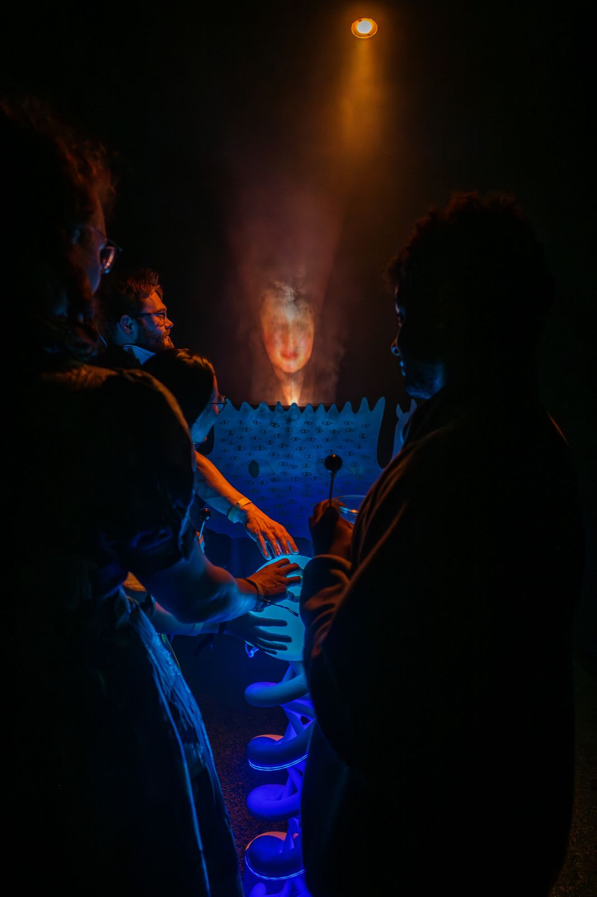
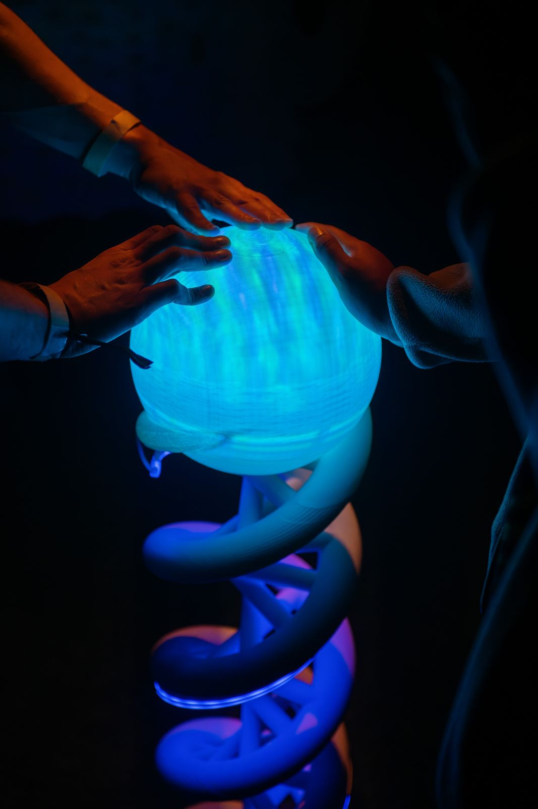

The Oracle is a fog-projection booth made for Emergence: The After Party, the launch of the Emergence catalog at York Manor, Los Angeles. Inside a dark tent, experts in synthetic biology and art appeared as faces floating in a sheet of mist, several of them joining remotely. Visitors placed a hand on an orb, an oracle appeared, and small groups asked questions about the future of technology and synthetic biology, often with prompt cards.
Produced by Henry Tan and Weeratouch Pongruengkiat. Creative technology (fog screen, MediaPipe and TouchDesigner face system, live operation): Weeratouch Pongruengkiat. Oracles: Dr. Christina Agapakis, Dr. Lonny Brooks, Lauren (Ren) Ramlan, the Tissue Culture & Art Project (Oron Catts and Ionat Zurr), Dr. Andrew Torrance. Hosts: Jade Fabello, Guy Rohkin. Zoom host: Amar Ibrahim.
